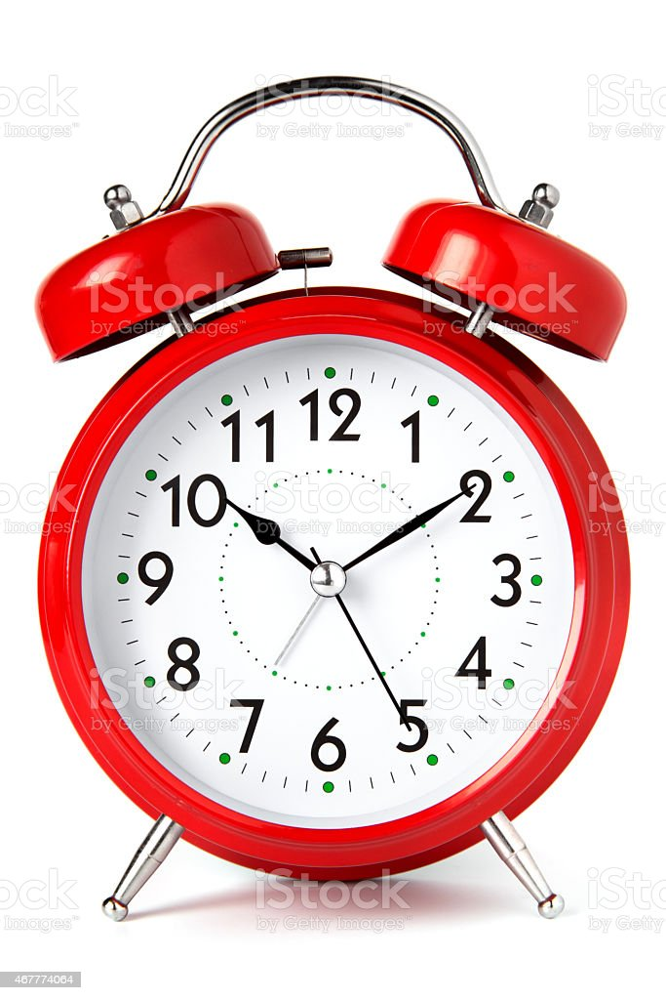

Career Fairs
- GO. Even if you aren't looking for an internship
- Companies will still let you submit your resume, and will keep it when you apply in the future
Job Shadow
- Meet current interns and recent grads!!
- You may think companies don't want freshman interns, but think again!
Time Management
- Even though it sounds cliché, avoid procrastination.
- Assignments take much longer to do, so don't wait!